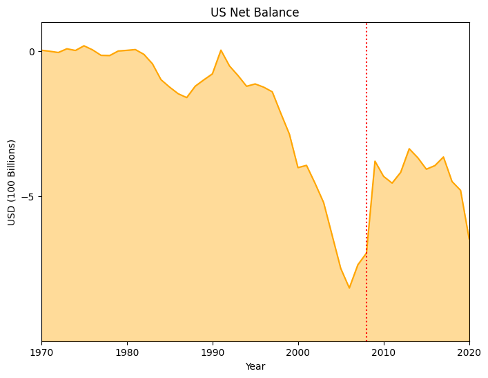
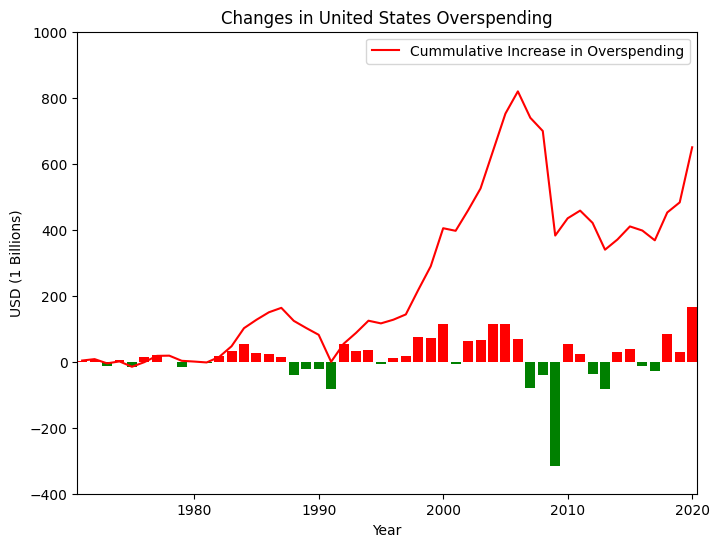

The United States Has Been Effective at Reducing their Spending Deficit
FOR the Proposition

Design Decisions and Rationale:
- Negative Balance values (-1): The original data had Balance Values as negative, which indicate that the United States imports more than it exports and I deliberately decided to leave the data unaltered. However, there is a noticable trend that the United States spends more than they make at an increasing amount. This is reflected on the graph as values getting more negative, a key factor to this visualization. Although not deceptive in a standalone manner, the negative values enable deceptive techniques that are later used, so I rated it a -1.
- Filling the area outside of the observed data (-2): This is the main deception in my visualizaiton. Normally, the highlighted/shaded area is the region between the x-axis and the line, however, in my case I decided to shade the region outside of the line. This deception is powered by the negative values as now the area outside the plotted area would be below the line. Since an increase in overspending would result in a downward movement. The downward movement would be visualizaed as decreasing the shaded region. This gives the illusion that the United States Spending deficit is decreasing, when in reality it is increasing.
- Axis Scaling and Tickmarks (-1): The decision to both scale the y-axis by 100 billion, instead of a more intuitive 1 billion, and only include one tickmark, are efforts to reduce the visual footprint the y-axis in hopes that the viewer doesn't pay much detail to it. Since there is only one tick mark, it has the added affect of making the user assume that above the graph means "more" and below means "less", despite being the opposite. This is effective because people have a greater exposure to graphs where the higher a value is on a graph, the "greater" the value, and the lower the value, the "lesser" the value, despite being the opposite in this very specific case
- Color Orange (-0.5): Not very deceptive but not very truthful either. I chose the color orange because in my mind, it is between good (green) and bad (red). Orange is a more "neutral" color and is less prone to sparking further inquiry. If the color was more indicative, like green or red, it would likely spark opposition, which would lead them to figuring out the deception in this visualization.
AGAINST the Proposition

Design Decisions and Rationale:
- Using Positive Values to represent overspending, more imports than exports(1): The original dataset used negative values to represent overspending since that would represent more imports than exports. However, for the point that I am trying to convey, a positive value would intuitively represent an increase in overspending. Making overspending a positive value is earnest because it conforms to the intuitive thought.
- Including both Cummulative and YoY Changes (2): This decision is very earnest because it prevents the misinterpretation of the YoY changes. Alone, it is difficult to accurately internalize the cummulative changes, as we tend to focus on just the major changes, and forget about the incremental changes. In this case, the outlier that is a major decrease in ovespending may cause the viewer to think that the total overspending is less than it actually is. By including the cummulative graph alongside the YoY it prevents misunderstandings, which is very earnest in nature. For the purposes of my visualization, the bar graph helps to show the quantity of years where overspending is increasing, while putting the amount of overspending on the backburner. This helps to show that this increase in overspending occurs very frequently and is not just several years. This is particuallary helpful for years that produce a relatively straight increase, such as from about 1995-2005. The bar graph helps to show that it was basically all the years that increased. Without the bars, it may be interpreted as a year of massive overspending instead of many years of progressive overspending.
- Red Positive and Green Negative values (1): Intuitive, people associate red with bad and green with good. As such, I used red as the color for positive values, as that would mean that their is an increase in overspending, a bad thing. When the YoY Change is negative, that means that there has been a decrease in overspending, a good thing. I decided to color the entire cummulative graph as red to reinforce the notion that the more positive the value, the worse it is. I would say that this is moderately earnest because it takes extra steps to ensure that the reader properly interprets the visualization.
Final Reflection
One of the hardest parts of creating these visualizations was creating a truly earnest visualization. I found that the deceptive visualization was a lot more straightforward with its design in the sense that it was simpler to construct a visualization with the intent to persuade, regardless of the actual content. This is evidenced by my deceptive visualization trying to sell a lie, not even a half-truth. The same cannot be said about the earnest counterpart. When trying to make an earnest visualization, I struggled to really convey the information, as there was a massive dip in my visualization, which would indicate that the United States is performing well at reducing overspending. To counteract this, I had to combine another plot, the bar plot, to show that for the majority of years, overall spending is increasing. I was surprised by how difficult it was to display accurate and earnest information while trying to push a point. I now see why visualizations can be very deceptive when trying to push a point.
I define "ethical analysis and visualization" as using the data for its intended purposes, with the intent to identify trends or other findings, instead of trying to defend a predetermined notion. Data analysis should not have a strong implicit bias before performance, be that through the performer or the firm performing it. Performing this project, makes me question the outcomes of certain studies or certain data visualizations, as the firm conducting such analysis often has a bias due to external factors.
It is very difficult to create an ethical yet persuasive visualization. The boundaries that I believe exist between a misleading and acceptable design decision relate to the purposes of the decision. If a decision is made in an effort to highly a certain finding, then it may be deemed acceptable. This is because the underlying data is not being eliminated. However, when a decision is made with the intent to hide a finding, then it becomes misleading. This occurs because the underlying data is being altered in such a way that differs severely from the original data, resulting in an overall data reduction./p>